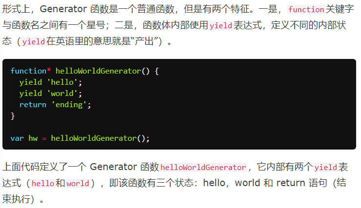

ES6 提供的一种异步编程解决方案，语法上，首先可以把它理解成，Generator 函数是一个状态机，封装了多个内部状态。
执行 Generator 函数会返回一个遍历器对象，也就是说，Generator 函数除了状态机，还是一个遍历器对象生成函数。返回的遍历器对象，可以依次遍历 Generator 函数内部的每一个状态。

调用 Generator 函数后，该函数并不执行，返回的也不是函数运行结果，而是一个指向内部状态的指针对象（遍历器对象）
每次调用next方法，内部指针就从函数头部或上一次停下来的地方开始执行，直到遇到下一个yield表达式（或return语句）为止。换言之，Generator 函数是分段执行的，yield表达式是暂停执行的标记，而next方法可以恢复执行。
next返回遍历结果对象，value为yield给出的值
yield表达式
- 需要注意的是，yield表达式后面的表达式，只有当调用next方法、内部指针指向该语句时才会执行，因此等于为 JavaScript 提供了手动的“惰性求值”（Lazy Evaluation）的语法功能。
- generator 函数可以不用yield表达式，这时就变成了一个单纯的暂缓执行函数。
- yield表达式只能用在 Generator 函数里面
- yield表达式如果用在另一个表达式之中，必须放在圆括号里面
- yield表达式用作函数参数或放在赋值表达式的右边，可以不加括号
由于 Generator 函数就是遍历器生成函数，因此可以把 Generator 赋值给对象的Symbol.iterator属性，从而使得该对象具有 Iterator 接口。
Generator 函数执行后，返回一个遍历器对象。该对象本身也具有Symbol.iterator属性，执行后返回自身。
yield表达式本身没有返回值，或者说总是返回undefined。next方法可以带一个参数，该参数就会被当作上一个yield表达式的返回值。
（也就是说，yield本身不会像赋值语句那样传递值，而是通过next方法注入值到表达式的下一步）

这个功能有很重要的语法意义。Generator 函数从暂停状态到恢复运行，它的上下文状态（context）是不变的。通过next方法的参数，就有办法在 Generator 函数开始运行之后，继续向函数体内部注入值。也就是说，可以在 Generator 函数运行的不同阶段，从外部向内部注入不同的值，从而调整函数行为。
由于next方法的参数表示上一个yield表达式的返回值，所以在第一次使用next方法时，传递参数是无效的
for...of循环可以自动遍历 Generator 函数时生成的Iterator对象
这里需要注意，一旦next方法的返回对象的done属性为true，for...of循环就会中止，且不包含该返回对象，所以return语句返回的值，不包括在for...of循环之中
==============================
Generator.prototype.throw()
可以在函数体外抛出错误，然后在 Generator 函数体内捕获。

throw方法可以接受一个参数，该参数会被catch语句接收，建议抛出Error对象的实例。
如果 Generator 函数内部没有部署try...catch代码块，那么throw方法抛出的错误，将被外部try...catch代码块捕获。
如果 Generator 函数内部和外部，都没有部署try...catch代码块，那么程序将报错，直接中断执行
throw方法抛出的错误要被内部捕获，前提是必须至少执行过一次next方法。否则抛出的错误不会被内部捕获，而是直接在外部抛出，导致程序出错。
因为第一次执行next方法，等同于启动执行 Generator 函数的内部代码。
throw方法被捕获以后，会附带执行下一条yield表达式。也就是说，会附带执行一次next方法。
Generator 函数体外抛出的错误，可以在函数体内捕获；反过来，Generator 函数体内抛出的错误，也可以被函数体外的catch捕获。
一旦 Generator 执行过程中抛出错误，且没有被内部捕获，就不会再执行下去了。如果此后还调用next方法，将返回一个value属性等于undefined、done属性等于true的对象，即 JavaScript 引擎认为这个 Generator 已经运行结束了。
==========================================
Generator.prototype.return()
Generator 函数返回的遍历器对象，还有一个return方法，可以返回给定的值，并且终结遍历 Generator 函数。
调用return后，返回值的value属性就是return方法的参数
如果 Generator 函数内部有try...finally代码块，那么return方法会推迟到finally代码块执行完再执行。

=============================
next()、throw()、return()这三个方法本质上是同一件事，可以放在一起理解。
它们的作用都是让 Generator 函数恢复执行，并且使用不同的语句替换yield表达式。
- next()是将yield表达式替换成一个值。
- throw()是将yield表达式替换成一个throw语句。
- return()是将yield表达式替换成一个return语句。
================================
yield*表达式
如果在 Generator 函数内部，调用另一个 Generator 函数，默认情况下是没有效果的。
这个就需要用到yield*表达式，用来在一个 Generator 函数里面执行另一个 Generator 函数。
yield*表达式相当于在一个Generator函数内部展开了一个迭代器
实际上，任何数据结构只要有 Iterator 接口，就可以被yield*遍历
如果被代理的 Generator 函数有return语句，那么就可以向代理它的 Generator 函数返回数据。（即作为yield*表达式的返回值）

================================

===============================
Generator 函数总是返回一个遍历器，ES6 规定这个遍历器是 Generator 函数的实例，也继承了 Generator 函数的prototype对象上的方法。

chrome下测试，这个this指向了window；node下是全局环境（删除，测试方法有问题）
Generator 函数也不能跟new命令一起用（不能作为构造函数）
那么，有没有办法让 Generator 函数返回一个正常的对象实例，既可以用next方法，又可以获得正常的this？
下面是一个变通方法。首先，生成一个空对象，使用call方法绑定 Generator 函数内部的this。这样，构造函数调用以后，这个空对象就是 Generator 函数的实例对象了。

上面代码中，执行的是遍历器对象f，但是生成的对象实例是obj，有没有办法将这两个对象统一呢？

原型是公共的，因此这样做也是有瑕疵的；不过作为单例使用时，这是比较好的实践方法

这里加不加new操作符，其实是一样的
=============================
应用：
1.异步操作同步化表达
2.控制流管理（分解多步（同步）任务）
3.可以方便地在任意对象上部署遍历器
4.提供类似数组的数据结构